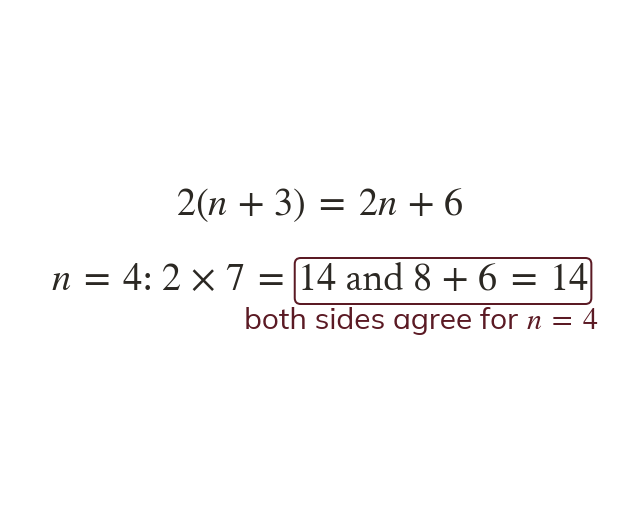
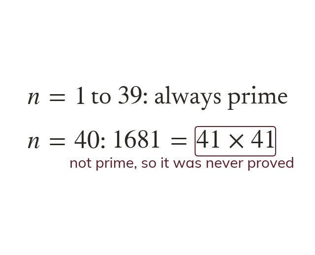
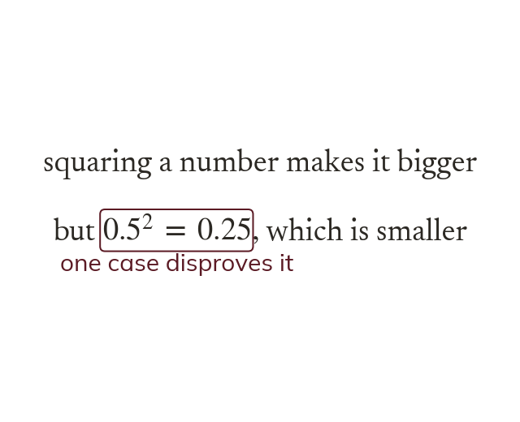
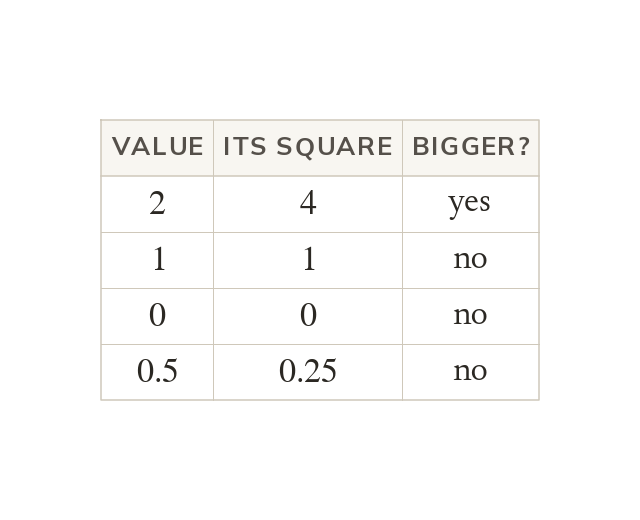

Verifying checks one case
To verify a statement is to check that it holds for one particular value. Substituting the value shows whether both sides agree.
Mathematicians never trust a pattern just because it keeps working. Today is about checking a claim, and about how a single example can destroy one.
Work down the page at your own pace. Write every answer in your book first, then click to check it.
Read each card, then follow the worked examples one step at a time.

To verify a statement is to check that it holds for one particular value. Substituting the value shows whether both sides agree.

A statement can hold for many cases and still be false. is prime for to
It fails at
Pick an answer. If it's wrong, the feedback tells you which mistake it was.
Read each card, then follow the worked examples one step at a time.

A counter-example meets a statement's conditions but not its conclusion. One is enough to show the statement is false.

Counter-examples usually sit at the edges: negatives and fractions. A case only counts if it meets the statement's conditions.
Pick an answer. If it's wrong, the feedback tells you which mistake it was.
Finished? Next lesson: 8.14.2 Sequences and Rules.
Videos, worksheets and more on each part of this lesson.